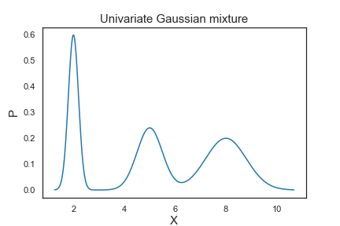
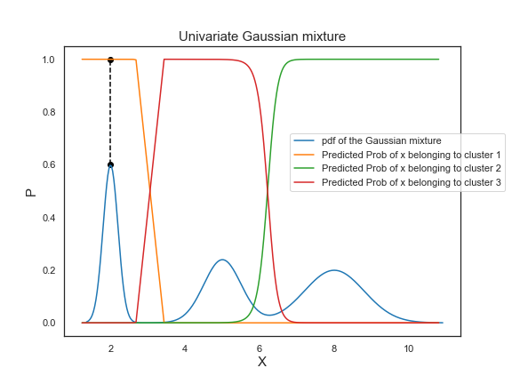
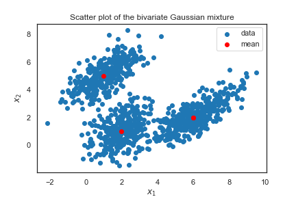
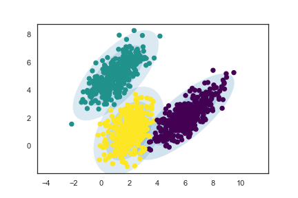
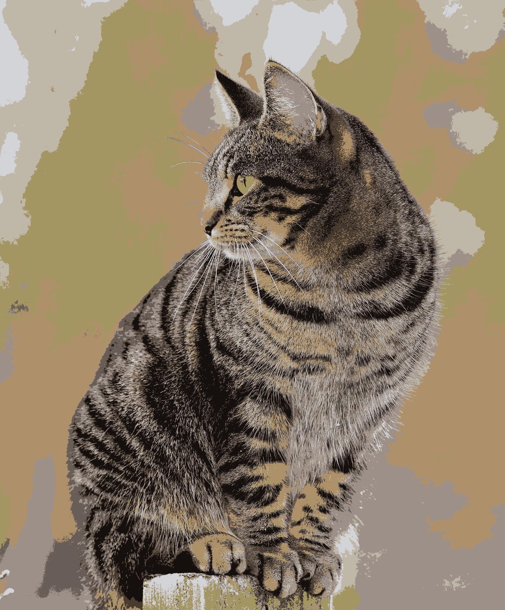

Imagine you are a Data Scientist who builds a recommender for selling cars using K-Means clustering and you have two clusters. Everybody in cluster A is recommended to buy car A which costs 100k with a 25k profit margin and everyone in cluster B is recommended to buy car B which costs 50k with a 10k profit margin.
Let’s say you want to get as many people in cluster A as possible, why not use an algorithm that informs you of exactly how likely somebody would be interested in purchasing car A, instead of one that only tells you a hard yes or no (This is what K-Means does!).
With GMM, not only will you be getting the predicted cluster labels, the algorithm will also give you the probability of a data point belonging to a cluster. How amazing is that!
Whoever is selling those cars should definitely work on a better plan for a customer with a 90% chance of purchasing than for someone with a 75% chance of purchasing, even though they might show up in the same cluster.
Put simply, Gaussian Mixture Models (GMM) is a clustering algorithm that:
k)Hard vs Soft Clustering:
GMM is a soft clustering algorithm.
A Gaussian mixture is a weighted combination of (k)
Gaussians, where each is identified by the following parameters:
When put altogether, the pdf of the mixture model is formulated as:
Let’s look at a mixture of 3 univariate Gaussians with

Thus, the means determine the centers of the mixed Gaussians; the standard deviations determine the width and shape of the mixed Gaussians; the weights determine the contributions of the Gaussians to the mixture.
Let’s fit a GMM with n_components=3 to our simulated
data and plot the prior probabilities. The
GaussianMixture class from
Scikit-learn allows us to estimate the parameters of a
Gaussian mixture distribution.
GaussianMixture.predict_proba_ evaluates the
components’ density for each sample or for sample

To interpret the predicted probabilities, let’s take a look at the point colored in black as an example. On the Gaussian mixture pdf, the point is at the the peak of the first bell-shaped curve. Its corresponding probability of belonging to cluster 1 is equal to 1, which demonstrates that the probability of the center of a Gaussian distribution belonging to its own cluster is 100%.
import numpy as np
import scipy.stats as ss
import matplotlib.pyplot as plt
from sklearn.mixture import GaussianMixture
means=[2,5,8]
stds=[0.2, 0.5, 0.8]
weights=[0.3, 0.3, 0.4]
mixture_idx = np.random.choice(3, size=10000, replace=True, p=weights)
# generate 10000 possible values of the mixture
X = np.fromiter((ss.norm.rvs(loc=means[i], scale=stds[i]) for i in mixture_idx), dtype=np.float64)
# create x axis of the plot
xs = np.linspace(X.min(), X.max(), 300)
ps = np.zeros_like(xs)
for mu, s, w in zip(means, stds, weights):
ps += ss.norm.pdf(xs, loc=mu, scale=s) * w
# sort X in ascending order for plotting purpose
X_sorted = np.sort(X.reshape(-1)).reshape(-1,1)
# fit the GMM
GMM = GaussianMixture(n_components=3, random_state=10)
GMM.fit(X_sorted)
# store the predicted probabilities in y1_prob
probs = GMM.predict_proba(X_sorted)
# plot the Gaussian mixture pdf
plt.figure(figsize=(8,6))
plt.plot(xs, ps, label='pdf of the Gaussian mixture')
plt.xlabel("X", fontsize=15)
plt.ylabel("P", fontsize=15)
plt.title("Univariate Gaussian mixture", fontsize=15)
# plot the predicted prior probabilities
plt.plot(X_sorted, probs[:,0], label='Predicted Prob of x belonging to cluster 1')
plt.plot(X_sorted, probs[:,1], label='Predicted Prob of x belonging to cluster 2')
plt.plot(X_sorted, probs[:,2], label='Predicted Prob of x belonging to cluster 3')
plt.scatter(2, 0.6, color='black')
plt.scatter(2, 1.0, color='black')
plt.plot([2, 2], [0.6, 1.0],'--', color='black')
plt.legend(bbox_to_anchor=(0.6,0.7), borderaxespad=0)In this example, you have a simulated 2-dimensional data that looks like this:

means = [(1,5), (2,1), (6,2)]
cov1 = np.array([[0.5, 1.0],[1.0, 0.8]])
cov2 = np.array([[0.8, 0.4],[0.4, 1.2]])
cov3 = np.array([[1.2, 1.3],[1.3, 0.9]])
covs = [cov1, cov2, cov3]
weights = [0.3, 0.3, 0.4]
mixture_idx = np.random.choice(3, size=10000, replace=True, p=weights)
# generate 10000 possible values of the mixture
X = np.fromiter(chain.from_iterable(multivariate_normal.rvs(mean=means[i], cov=covs[i]) for i in mixture_idx),
dtype=float)
X.shape = 10000, 2
xs1 = y[:,0]
xs2 = y[:,1]
plt.scatter(xs1, xs2, label="data")
L = len(means)
for l, pair in enumerate(means):
plt.scatter(pair[0], pair[1], color='red')
if l == L-1:
break
plt.scatter(pair[0], pair[1], color='red', label="mean")
plt.xlabel("$x_1$")
plt.ylabel("$x_2$")
plt.title("Scatter plot of the bivariate Gaussian mixture")
plt.legend()Like before, to work with GMM, we can use the GaussianMixture function from sklearn.mixture. We fit a GMM with n_components = 3 to the simulated dataset, and plot the clustering result as follows:

Awesome! The fitted clusters indeed match the individual Gaussians we simulated, and the ellipses drawn based on the estimated parameter values (means, covariances, weights) contain the clusters.
The default value of covariance_type in GMM is
full, which allows each component (Gaussian) to have its
own covariance matrix.
Since our dataset was simulated using three different covariance matrices, using the default covariance_type value would work the best.
However, note that sometimes you can’t use covariance_type = full, because you won’t be able to invert it and that will give you an error.
Image segmentation is the process of segmenting an image into multiple important regions.
We can use a GMM to segment an image into K regions
(n_components = K) according to significant colors.
Each pixel would be a data point with three features (r, g, b) (Or 1 feature if greyscale).
For instance, if we are working with a 256
Let’s look at an example using a picture of a house cat:
First let’s segment our image using 2 gaussian distributions;
Then we replace each pixel with the “average color” or the mean RGB values of the gaussian distribution it belongs to:
Similarly, if we increase the number of components to 8:

Our segmented image looks remarkably similar to the original, even though it uses only 8 colors!
import numpy as np
import cv2
from sklearn.mixture import GaussianMixture as GMM
img = cv2.imread('cat.jpeg')
# If img is greyscale, then change to .reshape(-1, 1):
x = img.reshape(-1, 3)
# The number of components; you can change this to a positive integer of your choice!:
n = 8
gmm = GMM(n_components=n, covariance_type='tied')
gmm.fit(x)
labels = gmm.predict(x)
seg = np.zeros(x.shape)
for label in range(n):
seg[labels == label] = gmm.means_[label]
seg = seg.reshape(img.shape).astype(np.uint8)
cv2.imwrite(f'gauss-cat-{n}.jpeg', seg)